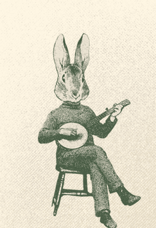
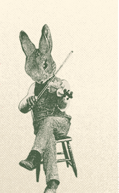
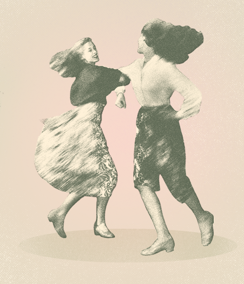

About the Band
Travel the familiar haunts along the intervals of the Eastern North Mountain outside of Canning, Nova Scotia, and you'll find yourself near the storied crossroads of Rabbit Square—a place rooted in local lore and the vibrant spirit of community gatherings. It's from this rich cultural landscape of the Annapolis Valley that the Rabbit Square Dance Band draws its name and inspiration.
Carrying forward the region's old-time dance tradition with infectious energy and authentic flair, the Rabbit Square Dance Band delivers an unforgettable experience for dancers and listeners alike. The band weaves together a tight, toe-tapping soundscape: Amy Lounder on fiddle, Jude Pelley on guitar, Peter Williams on upright bass, and Alex Nemet on banjo. Their joyful, driving rhythms invite everyone—whether seasoned dancers or curious newcomers—to join the whirl of the square.
From barn floors to festival tents, the Rabbit Square Dance Band brings communities together with each stomp, spin, and swing. Come for the music, stay for the magic.
The Band

- Amy Lounder — Fiddle
- Jude Pelley — Guitar
- Peter Williams — Upright Bass
- Alex Nemet — Banjo

Music & Video
Live at Gaspereau Community Hall
Live at Ross Creek Annex, Canning NS

Contact & Booking
Available for festivals, dances, barn dances, listening rooms, and private events.